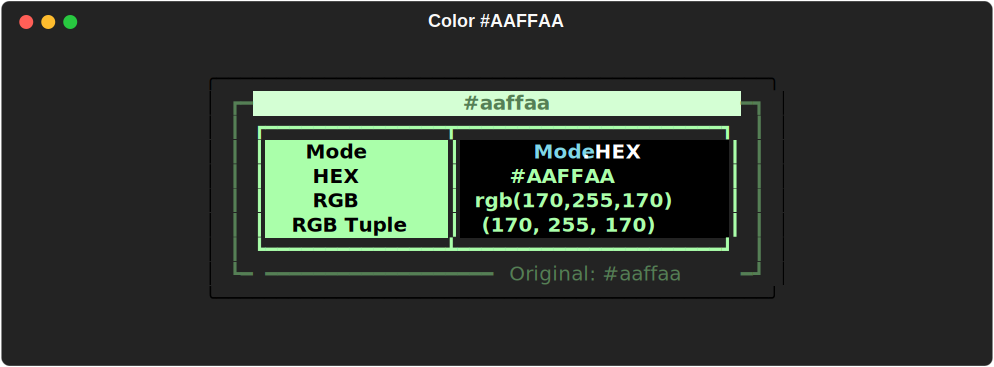
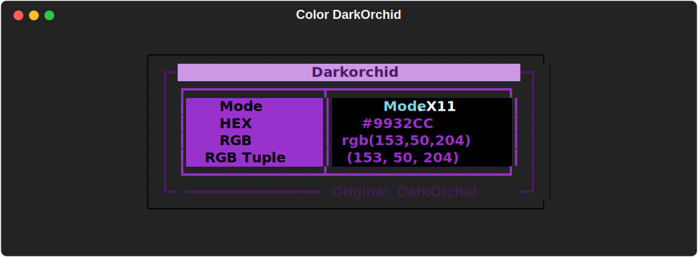

MaxGradient.Color¶
Color extends the Rich.color.Color class to allow colors to be parsed from:
- X11 color names (over 200 colors)
- Rich's Standard Color Library
- Hex codes (3-digit and 6-digit)
- RGB values (with or without the 'rgb' prefix)
A color can be represented as a string in numerous ways. The easiest is the name of the color:
- red
- magenta
- blue
You can also use the hex code of the color:
- #ff0000 (six digit hex code)
- #f0f (three digit hex code)
Or the rgb values of the color:
- rgb(0,85,0) (with
rgbprefix) - (0, 255, 0) (
rgbtuple without prefix)
In addition to common names, MaxGradient also supports the entire rich color standard color palette. But we didn't stop there, in addition to rich's standard library, MaxGradient also supports the entire X11 color palette. That's over 200 colors!
Example 1: Color("red")¶
from maxgradient import Color, Console
console = Console()
console.print(
Color("red"),
justify="center"
)

Example 2: Color("#AAFFAA") ¶
console.print(
Color("#aaffaa"),
justify = "center"
)

Example 3: Color("DarkOrchid")¶
console.print(
Color("DarkOrchid"),
justify = "center"
)

Possible Colors¶
To view all of the available colors run the following command in the console:
python -m maxgradient.color